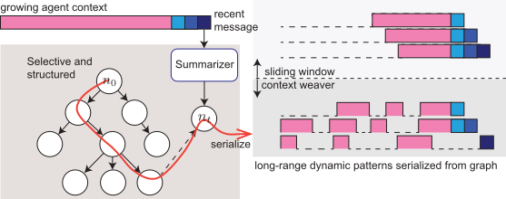

Overview
A coding agent may need an observation made many steps earlier. ContextWeaver links each step to the observations and decisions it depends on, then uses those links to choose what to keep in the next context. Execution feedback tracks steps that have failed or been superseded.
We evaluate ContextWeaver on five software-engineering and terminal benchmarks, with a fixed budget per task. It improves the resolve rate over a sliding window on all five and needs fewer agent steps. The largest gains are on long repository tasks. On SWE-Bench Pro Python tasks with Claude Sonnet 4.5, the resolve rate rises from 66.5% to 72.6%. The gains hold with two open-weight backbones and, with Kimi-K2.5, against a sliding window given the same total budget.
How context is built

After each step, ContextWeaver updates the dependency graph and prepares the context for the next action.
Add a node
Represent the latest history entry as a node in the graph.
Choose its parents
Rank earlier steps by dependency likelihood and keep up to
mparents. Exclude nodes marked Failed or Superseded.Follow the dependencies
After warmup, collect the selected parents and their ancestors, up to the
W-node limit.Build the context
Keep the selected entries in full and compress the others. Preserve their original order.
During warmup, the agent receives the full history. Algorithm 1 gives the complete procedure.
The experiments use a lower-cost configuration. Parents are scored by shared files, shared identifiers, and recency instead of an LLM call. Observations outside the selected set are replaced by their node summaries.
- Preprint
- Method, experiments, comparisons with other context management, and case studies.
Results
Every method runs in SWE-agent with the same prompt, tools, and budget per task. Unless noted, the agent model is Claude Sonnet 4.5 with a $3 cap per task.
72.6%
SWE-Bench Pro Python resolve rate, up from 66.5% with a sliding window
5 of 5
benchmarks where ContextWeaver resolves more tasks than a sliding window
13–18%
fewer agent steps than a sliding window on each benchmark
Higher resolve rates on all five benchmarks
With the same budget, ContextWeaver resolves more tasks than a sliding window on every benchmark. The largest gains are on the SWE-Bench Pro large-change subset and SWE-EVO, the longest tasks.
Tasks graded in every run of both methods. Large change: the gold patch touches at least 4 files or 150 lines. * p < 0.05, *** p < 0.001, exact McNemar test pooled over runs.
Show table
| Benchmark | Sliding window | ContextWeaver | Δ |
|---|---|---|---|
| SWE-Bench Pro, Python (186 tasks) | 66.5 | 72.6 | +6.1*** |
| SWE-Bench Pro, large change (22 tasks) | 60.6 | 71.2 | +10.6 |
| SWE-Bench Pro, Go/JS/TS (175 tasks) | 37.5 | 41.3 | +3.8 |
| SWE-Bench Multilingual (262–289 tasks) | 43.2 | 46.7 | +3.5* |
| SWE-EVO (42 tasks) | 23.8 | 31.7 | +7.9 |
| SWE-rebench (212 tasks) | 27.2 | 30.3 | +3.1* |
| Terminal-Bench 2.0 (61 tasks) | 43.2 | 44.8 | +1.6 |
Consistent across backbones
On SWE-Bench Pro Python, the gain is significant with all three backbones. The summaries add cost, so we also gave the sliding window the same total budget with Kimi-K2.5. It resolves 53.4%, still below ContextWeaver.
The caps give each backbone the same token budget. *** p < 0.001, exact McNemar test pooled over runs.
Show table
| Backbone | Sliding window | ContextWeaver | Δ |
|---|---|---|---|
| Claude Sonnet 4.5 ($3.00 cap per task) | 66.5 | 72.6 | +6.1*** |
| Kimi-K2.5 ($0.60 cap per task) | 54.1 | 62.7 | +8.6*** |
| GLM-5 ($1.00 cap per task) | 61.6 | 69.5 | +7.9*** |
Against other context management
We also compare with keeping the full history, LLM summarization, BM25 retrieval, and a hybrid of summarization and a sliding window. On the large-change tasks, ContextWeaver resolves 71.2%, and the next best method resolves 63.6%. On the Pro sample, it ties with the sliding window.
Large change 22 tasks
Pro sample 26 tasks
Mean of three runs; five for the sliding window and ContextWeaver on the Pro sample. Hybrid: a sliding window with periodic LLM summarization (Lindenbauer et al., 2025).
Show table
| Method | Large change (22 tasks) | Pro sample (26 tasks) |
|---|---|---|
| ContextWeaver | 71.2 | 72.3 |
| Sliding window | 60.6 | 72.3 |
| Full history | 63.6 | 67.9 |
| LLM summarization | 62.1 | 64.1 |
| Retrieval (BM25) | 62.1 | 71.8 |
| Hybrid | 59.1 | 67.9 |
Citation
View BibTeX
@misc{contextweaver2026,
title={{ContextWeaver: Selective and Dependency-Structured Memory Construction for LLM Agents}},
author={Wu, Yating and Zhang, Yuhao and Ghosh, Sayan and Basu, Sourya and Deoras, Anoop and Huan, Jun and Gupta, Gaurav},
year={2026},
eprint={2604.23069},
archivePrefix={arXiv},
primaryClass={cs.CL},
url={https://arxiv.org/abs/2604.23069}
}